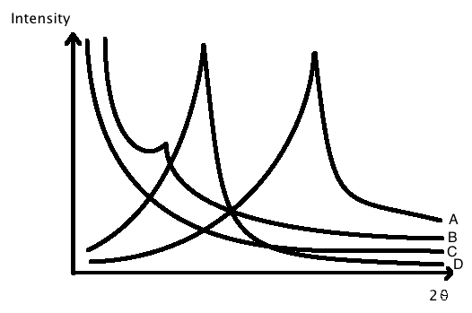

- White light resolution ~ 300nm
- Numerical Aperture (NA) ~ 1.2-1.5 for and optical microscope
- Wavelength

resolution
Taught by: Dr. Jain Lin
Taken: SS 2015
Characterization of Nanomaterials
Contrast Enhancement
Brightfield
- Sensors placed parallel to direct beam
- Makes background brighter than object
Darkfield
- Sensor place at an angle/offset from direct beam
- Makes object brighter than background
Microscope Resolution
- White light resolution ~ 300nm
- Numerical Aperture (NA) ~ 1.2-1.5 for and optical microscope
- Wavelength
Electron-Specimen Interaction
- BSE and SE come off top of specimen
- Scattered and unscattered electrons transmit through specimen
- X-rays off top of specimen
Back Scattered Electrons (BSE)
- Scattering angle > 180
- Atomic number

Secondary Electrons (SE)
- Collision between incoming electrons and loosely bonded electrons
Electron Microscope
Scanning Electron Microscope (SEM)
- Collects BSE and SE
- Provides morphology information
Energy Dispersive X-Ray Spectroscopy (EDS)
- X-rays emitted during SEM
- Provides element information (element mapping)
Transmission Electron Microscope (TEM)
- Collects BSE and SE like SEM but also collects transmitted electrons
- Provides crystal structure in addition to the information SEM provides
X-Ray Photoelectron Spectroscopy (XPS)
- Kinetic energy of electrons to reveal binding energies
- Determines elements by binding energies
- Can differentiate between isotopes
X-Ray Diffractometer (XRE)
- Detects phase shifts in x-rays through a material
- Provides information on crystal structures (bond length, bond angle, atom positions)
Scanning Probe Microscopy
Atomic Force Microscopy (AFM)
- Drags a probe across the tops of a specimen
- Measures tomography and some mechanical properties
Scanning Tunneling Microscopy (STM)
- Measures electric current between a probe and the specimen
- Provides surface information
Nano Composites
Polymer vs. Ceramic vs. Metal
- Ceramic = high strength, low toughness
- Polymer = high toughness, low strength
- Metal = medium strength, medium toughness
What Are Composites
- Consists of a matrix material base and added reinforcement material
- Create new and improved properties from the combination of materials
Polymer/Nano Clay
Phase Separated (Microcomposites)
- Polymer is unable to enter silicate
- Poor mixing leaves regions properties largely dependant on single materials
Intercalated (Nanocomposite)
- Single polymer inbetween silicate layers
- Overall material properties starting to not have localized zones
Exfoliated/Delaminated
- Silicate layers are dispersed in polymer matrix (complete mixing)
- Properties are very different even compared to the microcomposite
XRE of Possible Polymer/Nano Clay Samples
d - Distance bewteen layers
- Wave length
- Phase angle
|  |
A = Phase Separated
B = Partially Exfoliated
C = Fully Exfoliated
D = Intercalated
CNT's/Polymer Nanocomposites
- Carbon nanotubes are favorable due to high aspect ratio and low percolation threshold
- CNT's need to be well dispersed otherwise they crate high stress concentration sites and lower the mechanical properties
- Improve mechanical properties by exceeding aspect ratio threshold for CNT/Polymer composites
- Pass percolation threshold to significantly increase electrical properties
Interface and Load Transfer
- Changes structure, phase transitions, molecular mobility
- AFM can measure its shear force/stress/strength
- Can deflect cracks away from center material
Nanosensors
Why Nanosensors
- Large surface to volume ratio
- Debye length comparable to radius
- Debye length is the part of the material that contrubutes to electron transport
- Can travel from interior to surface faster
Parts Needed for a Sensor
- Detectors
- Receptors
- Conductors
Preferable Sensor Characteristics
- Sensitivity
- How much does the measured value change
- Response time
- How quickly does the measured value change when stimulated
- Recover time
- How quickly does the measured value return to steady state after the stimulus has been removed
- Selectivity
- Does the sensor react to stimulii other than what you're trying to sense
- Cyclic performance
- Will the sensor continue to work repeatedly
Example
CNT, Field Effect Transistor
- Detects a resistance change of the CNT when gasses or other molecules bind to the outside